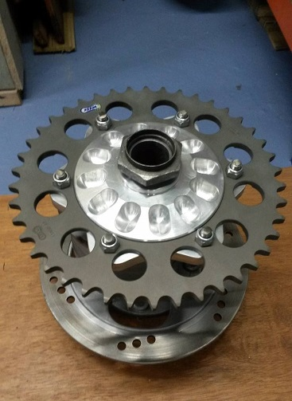

The history behind it
 Hub clamp: Ripper cut on the Bridgeport using a rotary table
Hub clamp: Ripper cut on the Bridgeport using a rotary table
I have always experienced unwanted flex as I up the pace on corner entry. A full body weave as if it were hinged in the middle when at full lean on harsh bumps. The frame is still a work in progress but
that aside I considered in principal that a road derived old cast swingarm is probably lacking in stiffness. Looking back to the alterations done by HRC 20 years ago I can see it had issues. I wasn’t too impressed with their tactics
though. They produced a thick 6mm plate that you could weld onto the top of the swingarm to add lateral stiffness. What a bodge! Then you could buy various cast variations with additional internal webs. They gave in and went double sided which is a
logical step. I’m sticking with the single sided for now as I want to maintain the ability for fast wheel changes.
The old one
Back into 2012 when the project first started I welded a bracing structure on top of the swingarm which was a token gesture to stiffness (it was pants). I cut a standard swingarm open to examine the casting thicknesses and sections throughout. I was
quite surprised to see how much material there was particularly around the shock linkage mount and just how little there was towards the hub clamp. I could see some good scope for improvement. The ‘jaws’ as I call them that grasp the hub are equally poorly supported and could see the source of
the flex. An improvement would be to make one side of the jaw short and rigid whilst reducing the length of the opposing jaw as much as possible in an effort to reduce both lateral and torsional flex.
 Basic casting box construction
Basic casting box construction
Guides for pull threads in place
 Finished part fully formed
Finished part fully formed
Part trimmed ready to weld
The new one
Most of the panels were quite easy to form on the beautiful set of 1950's sheet rollers I acquired. The 3mm thick sheet was just passed the limits of it's designed capability but I avoided doing any hot bending to compensate as I did not want the section thickness to be compromised.
Each panel was mocked up in cardboard, plastercene and bodyfiller to begin with before being cut out of sheet 5083. The formed sections were made using an array of different press tools I constructed for the job.
The steel press tools are the best but most expensive and time consuming to make. With a dowel in each corner to guide them together they worked first time.
For the larger top and bottom formed panels I experimented with large concrete moulds which failed spectaculary the first few times; I used a Manitou as the press which suprisingly wasn't upto it. It was quite remarkable to watch a 16 tonne machine lift itself off the ground with my futile 2 foot square concrete press staring back at it without even flinching.
We resorted to some crude agricutural engineering that day; a bucket of spuds dropped at speed with said Manitou. The Manitou just took off quicker, and then the concrete started to crack.
The second revision was a much better success; 6 M16 threaded bars welded to spreader plates only just managed to form the bottom panel with me working overtime with a gas torch on the plate and a 2 foot breaker bar on the clamping nuts. Hot forming was the only way to go with such large complex forms. If it were a production part for a motorcycle you would see a press tool the size of your house to do these parts.
Simple but effective press tools
The result
The new swingarm is constructed with 5083 sheet throughout purely because it avoids the
need for post weld heat treatment. Pivot mounts and hub clamp were machined from rolled solid. Cast blocks are easy to obtain but rolled offers slightly greater grain alignment but are harder to come by. Sheet sections are 3mm thick in the H111
condition, rolled and pressed using my old flypress and rollers and then welded with 5356 rods. The old equipment is great; solid cast iron. I am adamant in years to come equipment like this will be the cherished jewels.

Cushless drive, hub and axle - 2.4Kg reduction in reciprocating mass
Other additions
To finish off the fabrication I made a cushless drive sprocket carrier along with a new eccentric hub and spindle of my own design to give greater resistance to radial loads. I would have prefered to use a 7000 series aluminium for the construction of the rear arm;
such as 7020. It offers greater tensile strength per relative thickness of section used in comparison to 5083, however 7020 is hard to come by and expensive in particular sizes. It's also likely to require heat treatment and post machining processes
to compensate for the distortion. Mine will be slightly heavier as a result due to the use of thicker section sizes. It will be favourable to the bikes weight distribution at least, which is currently somewhat biased the front: Cue the carbon front fork project!